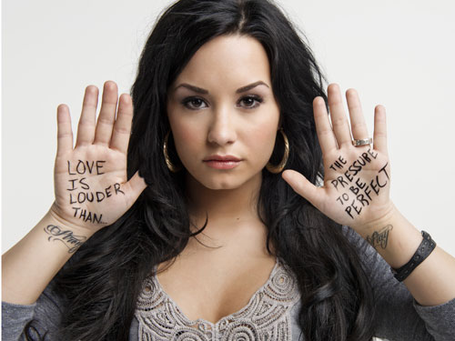

Anyone can be impacted by poor mental health. Below are some celebrites speaking out about their own experience with mental health.
He opened up to the press that he experienced anxiety while filming Deadpool. Due to high expectations he "never,ever slept." The 40-year-old credited his wife, Blake Lively, for helping him through it.
She is determined to destigmatise mental illness by sharing her story, when she was bulimic and anorexic as well as diagnosed with bipolar disorder. At the National Council of Behavioral Health's Hill Day in Washington, D.C. she said, "I just think mental illness is something people need to learn more about. I want people to know it's okay to ask for help and it's okay to have a mental illness. I think it's important that people no longer look at mental health as something taboo to talk about..."
She is one of the most well known and successful models, who uses that publicity for good by sharing on Twitter her battle with depression. She tweeted: "I suffer from depression and was a model during a particularly rough patch of self hatred. I am so lucky for the work I get to do buti used to work to try and escape and just ended up completely exhausting myself. I am focusing on filming and trying to learn not to pick apart my every flaw. I am really good at that."
The actress opened up about dealing with anxiety. "Between ages 15 and 20, it was really intense. I was constantly anxious. I was kind of a control freak. If I didn't know how something was going to turn out, I would make myself ill, or just be locked up or inhibited in a way that was really debilitating,"Kristen Stewart talks about not being bale to let go.
He spoke about struggling with anxiety and an eating disorder. Even admits that "people don't expect it from a guy." His anxiety has even led him to cancel concerts. Zayn Malik said: "I have been working over the last three months to overcome my extreme anxiety around major live solo performances. I don't have it in me to feel secure in anything I do. I always strive towards something better. It's why I sometimes come across the wrong way- a bit distant. I'm stressed out trying to control how I'm perceived."